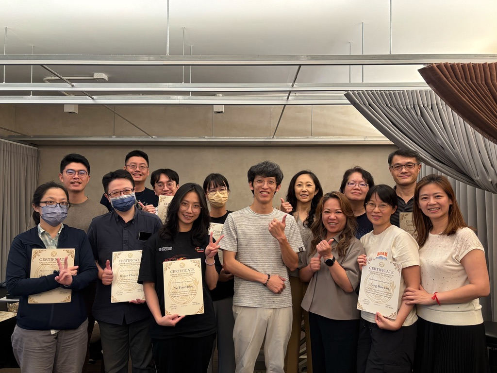

表面解剖：所有精準徒手與針刺的必經之路 —— 第四屆工作坊完成
【 表面解剖：所有精準徒手與針刺的必經之路 —— 第四屆工作坊完成 】
今天，第四梯次的「表面解剖觸診與徒手入門工作坊」順利落幕！
不知不覺中，這個工作坊已經累計與 64 位中醫師同道們交流學習。看著課堂上，從剛步入校園的大一新生，到臨床經驗豐富的前輩學長姐齊聚一堂，心裡實在充滿感激與感觸。
這一梯次，有兩位讓我印象特別深刻的學員。
一位是專程從香港搭機來台的中醫師。出於好奇，我問他怎麼會特地飛來上表面解剖？這才知道，他們在香港要接觸這類跨領域的課程並不容易，常面臨嚴格的職業資格排他性與門檻，於是他索性買了機票直接飛來台灣。
另一位，則是剛考上新設中醫系的大一新生。深聊後才發現她來頭不小，原本在運動訓練領域已有豐富經驗，出於對中醫的熱愛才毅然轉職。因為發覺校內初期的針傷資源相對有限，便積極主動向外探索。
這兩位學員跨越距離與身份來求知的強大動能，讓我既敬佩又感動。
坦白說，我也曾自我懷疑過。
在備課的無數個深夜裡，我常想：跟市面上、業界內百花齊放的課程相比，這樣一堂針對中醫師、以原理、基礎力學與思路為主軸，實作上要求大家從頭到尾把每一條肌肉精準抓出來、畫在皮膚上的課程，不專賣「一招見效」的驚奇手法或針法，會不會太過枯燥乏味？讓人想睡？
但每當這個念頭浮現，課堂上總會適時傳來這樣的驚呼：
「喔喔！原來起止點在這裡，那我以前都找錯了！」
「哎唷！原來立體結構是長這樣喔！」
聽到這些最真實的現場回饋，我就知道堅持做這件事絕對值得。因為從這一刻起，又多了一位同道真正認識了身體，把書本上平面的解剖圖，變成了手中摸得到的立體地圖。
透過這幾梯次的交流，我更加確信：
精準的表面解剖能力，是所有診療操作的「必須」。
只有站在扎實的表解基礎上，我們才能有標的性地進行治療。結合對基礎生物力學的認識，去理解身體各區域的連動關係，進一步擴展對疾病光譜的認知。
在探索人體未知張力的路上，表面解剖絕對是我們「內外互參、手針並施」最可靠的本職學能。
非常感謝學員們課後給予的寶貴建議：有人敲碗把兩天課程拉長到 3-4 天、有人提議增加臨床主題與助教，或是開辦骨盆或是其他專題。這些回饋，都將成為我未來優化與重新安排課程的最大養分。
因為今年安排了較多的自我進修課程，工作坊梯次只能舉辦兩梯，接下來就只剩年底的最後一梯了。平時要兼顧龐大的看診量、兼顧家庭、安排進修課程還要籌備工作坊，生活真的忙到快要有「生命危險」（笑）。
未來會有什麼新點子或新嘗試？就讓船到橋頭自然直，大家拭目以待吧！
招式各式各樣，但背後的原理說穿了就是那幾樣，這些看似枯燥、笨拙的基礎動作，往往才是支撐我們在臨床上走得更遠、更穩的中軸核心。
謝謝每一位來上課的醫師，我們一起在追求真實的醫學路上，繼續前行！
中醫師 黃彥鈞
拾初
#表面解剖與徒手入門
#中醫師的表面解剖
